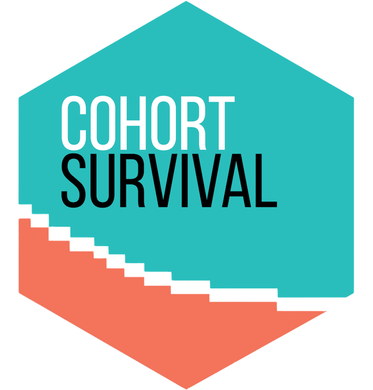

Authors and Citation
Authors
Citation
López-Güell K, Burn E, Catala M, Li X, Newby D, Mercade-Besora N (2025). CohortSurvival: Estimate Survival from Common Data Model Cohorts. R package version 1.0.0, https://darwin-eu-dev.github.io/CohortSurvival/.
@Manual{,
title = {CohortSurvival: Estimate Survival from Common Data Model Cohorts},
author = {Kim López-Güell and Edward Burn and Marti Catala and Xintong Li and Danielle Newby and Nuria Mercade-Besora},
year = {2025},
note = {R package version 1.0.0},
url = {https://darwin-eu-dev.github.io/CohortSurvival/},
}